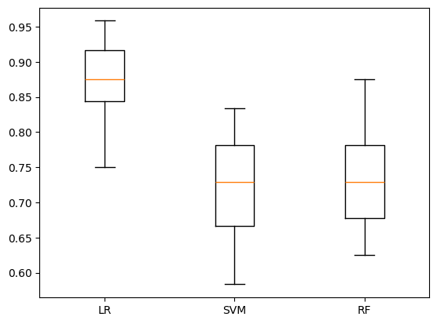
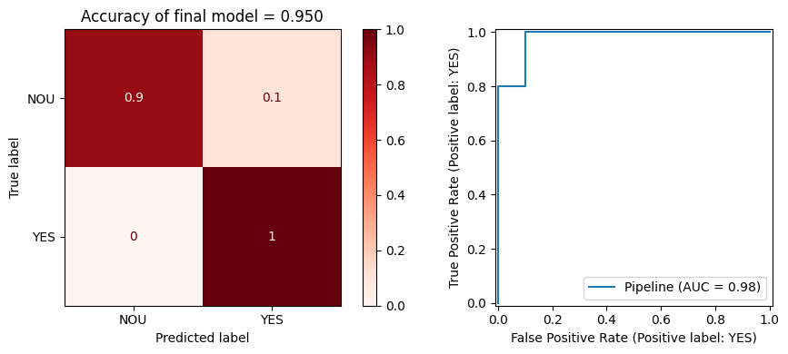
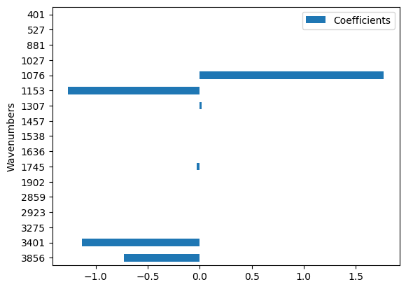
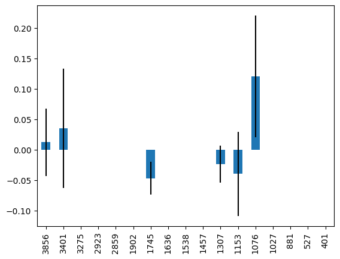
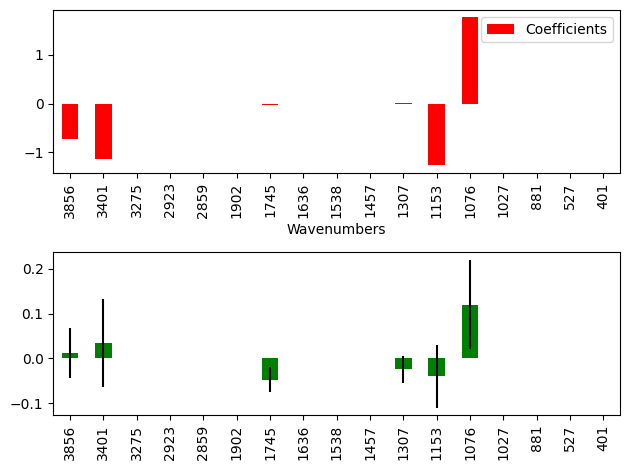
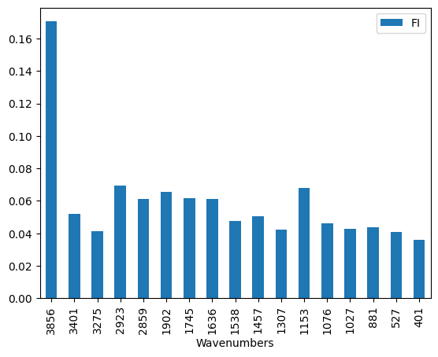
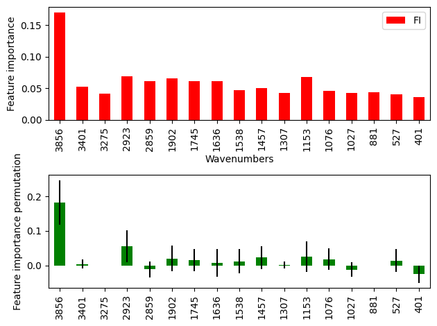
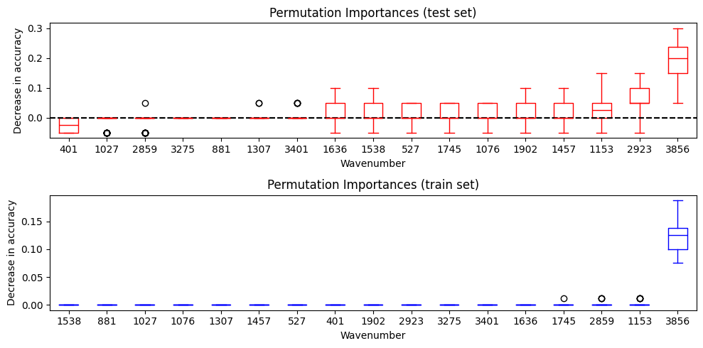

# import packages
import pandas as pd
import matplotlib.pyplot as plt
from sklearn.linear_model import LogisticRegression
from sklearn.ensemble import RandomForestClassifier
from sklearn.svm import SVC
from sklearn.preprocessing import StandardScaler
from sklearn.pipeline import Pipeline
from sklearn.model_selection import StratifiedShuffleSplit
from sklearn.model_selection import train_test_split
from sklearn.model_selection import cross_val_score
from sklearn.metrics import accuracy_score
from sklearn.metrics import ConfusionMatrixDisplay
from sklearn.metrics import RocCurveDisplay
from sklearn.model_selection import GridSearchCVBasic machine learning pipeline
1 Basic machine learning pipeline
In [2]:
In [3]:
# Import data
df = pd.read_csv("./data/UV_pilot.csv")
# Split features and target
X = df.loc[:,"4000":"403"]
y = df.loc[:,"Exposed"]
# Split into train and test sets
X_train, X_test, y_train, y_test = train_test_split(X, y, shuffle=True, stratify=y, test_size=0.2)In [4]:
model_dict = {
"LR": LogisticRegression(),
"SVM": SVC(),
"RF": RandomForestClassifier(),
}In [5]:
results = []
names = []
sss = StratifiedShuffleSplit(n_splits=10, test_size=0.3, random_state=7)
for key, model in model_dict.items():
pipe = Pipeline([('scaler', StandardScaler()), ('model', model)])
cv_results = cross_val_score(pipe, X_train, y_train, cv=sss, scoring="accuracy")
results.append(cv_results)
names.append(key)
print(f'Accuracy using {key} is {cv_results.mean():.2f} ± {cv_results.std():.2f}')
Accuracy using LR is 0.87 ± 0.07
Accuracy using SVM is 0.72 ± 0.08
Accuracy using RF is 0.74 ± 0.07In [6]:
fig, ax = plt.subplots()
ax.boxplot(results)
ax.set_xticklabels(names)[Text(1, 0, 'LR'), Text(2, 0, 'SVM'), Text(3, 0, 'RF')]
In [7]:
# create a dictionary with different hyperparameters and the values you want to test
param_grid = {'model__penalty': ['l1', 'l2'],
'model__C': [0.01, 0.1, 1, 10],
'model__solver': ['liblinear', 'saga']}
# create the new pipleine with the model we choose to optimize
pipe = Pipeline([('scaler', StandardScaler()), ('model', LogisticRegression(max_iter=10000))])In [8]:
search = GridSearchCV(pipe, param_grid, n_jobs=2)
search.fit(X_train, y_train)
print(f"Best parameter (CV score={search.best_score_:.2f})")
print(search.best_params_)Best parameter (CV score=0.91)
{'model__C': 1, 'model__penalty': 'l1', 'model__solver': 'saga'}In [9]:
search.best_estimator_Pipeline(steps=[('scaler', StandardScaler()),
('model',
LogisticRegression(C=1, max_iter=10000, penalty='l1',
solver='saga'))])In a Jupyter environment, please rerun this cell to show the HTML representation or trust the notebook. On GitHub, the HTML representation is unable to render, please try loading this page with nbviewer.org.
Pipeline(steps=[('scaler', StandardScaler()),
('model',
LogisticRegression(C=1, max_iter=10000, penalty='l1',
solver='saga'))])StandardScaler()
LogisticRegression(C=1, max_iter=10000, penalty='l1', solver='saga')
In [10]:
optimized_model = search.best_estimator_
optimized_model.fit(X_train, y_train)
y_pred = optimized_model.predict(X_test)In [19]:
y_predarray(['NOU', 'NOU', 'YES', 'YES', 'YES', 'YES', 'NOU', 'YES', 'YES',
'NOU', 'NOU', 'NOU', 'YES', 'YES', 'YES', 'NOU', 'NOU', 'YES',
'YES', 'NOU'], dtype=object)In [24]:
# Accuracy and confusion matrix
fig, (ax, ax2) = plt.subplots(1,2, figsize=(10,4), tight_layout=True)
ConfusionMatrixDisplay.from_predictions(y_test, y_pred, normalize='true', cmap='Reds',ax=ax)
RocCurveDisplay.from_estimator(optimized_model, X_test, y_test, ax=ax2)
title1 = (f'Accuracy of final model = {accuracy_score(y_test, y_pred):.3f}')
ax.set_title(title1)Text(0.5, 1.0, 'Accuracy of final model = 0.950')
1.1 Feature importance
In [70]:
# Import data
df = pd.read_csv("./data/UV_pilot.csv")
wavenumbers = ['3856', '3401', '3275', '2923', '2859', '1902', '1745', '1636', '1538', '1457', '1307', '1153', '1076', '1027', '881', '527', '401']
# Split features and target
X = df[wavenumbers]
y = df.loc[:,"Exposed"]
# Split into train and test sets
X_train, X_test, y_train, y_test = train_test_split(X, y, shuffle=True, stratify=y, test_size=0.2)In [71]:
# create a dictionary with different hyperparameters and the values you want to test
param_grid = {'model__penalty': ['l1', 'l2'],
'model__C': [0.01, 0.1, 1, 10],
'model__solver': ['liblinear', 'saga']}
# create the new pipleine with the model we choose to optimize
pipe = Pipeline([('scaler', StandardScaler()), ('model', LogisticRegression(max_iter=10000))])In [72]:
search = GridSearchCV(pipe, param_grid, n_jobs=2)
search.fit(X_train, y_train)
print(f"Best parameter (CV score={search.best_score_:.2f})")
print(search.best_params_)Best parameter (CV score=0.70)
{'model__C': 1, 'model__penalty': 'l1', 'model__solver': 'saga'}In [73]:
optimized_model = search.best_estimator_
optimized_model.fit(X_train, y_train)Pipeline(steps=[('scaler', StandardScaler()),
('model',
LogisticRegression(C=1, max_iter=10000, penalty='l1',
solver='saga'))])In a Jupyter environment, please rerun this cell to show the HTML representation or trust the notebook. On GitHub, the HTML representation is unable to render, please try loading this page with nbviewer.org.
Pipeline(steps=[('scaler', StandardScaler()),
('model',
LogisticRegression(C=1, max_iter=10000, penalty='l1',
solver='saga'))])StandardScaler()
LogisticRegression(C=1, max_iter=10000, penalty='l1', solver='saga')
In [74]:
# accessing the model coefficients
optimized_model.named_steps['model'].coef_array([[-0.73180761, -1.13038731, 0. , 0. , 0. ,
0. , -0.02957209, 0. , 0. , 0. ,
0.01832993, -1.26561288, 1.76822707, 0. , 0. ,
0. , 0. ]])In [75]:
feature_importance = pd.DataFrame()
feature_importance['Wavenumbers'] = wavenumbers
feature_importance['Coefficients'] = optimized_model.named_steps['model'].coef_.T
feature_importance['Wavenumbers'] = feature_importance['Wavenumbers'].astype('category')
feature_importance| Wavenumbers | Coefficients | |
|---|---|---|
| 0 | 3856 | -0.731808 |
| 1 | 3401 | -1.130387 |
| 2 | 3275 | 0.000000 |
| 3 | 2923 | 0.000000 |
| 4 | 2859 | 0.000000 |
| 5 | 1902 | 0.000000 |
| 6 | 1745 | -0.029572 |
| 7 | 1636 | 0.000000 |
| 8 | 1538 | 0.000000 |
| 9 | 1457 | 0.000000 |
| 10 | 1307 | 0.018330 |
| 11 | 1153 | -1.265613 |
| 12 | 1076 | 1.768227 |
| 13 | 1027 | 0.000000 |
| 14 | 881 | 0.000000 |
| 15 | 527 | 0.000000 |
| 16 | 401 | 0.000000 |
In [76]:
feature_importance.plot.barh(x='Wavenumbers', y='Coefficients')<Axes: ylabel='Wavenumbers'>
# permutation importance
from sklearn.inspection import permutation_importance
r = permutation_importance(optimized_model, X_test, y_test,
n_repeats=50,
random_state=0, scoring='accuracy')# create a series of the importances mean and add the names of the wavenumber values
forest_importances = pd.Series(r.importances_mean, index=X.columns.values)
# Barplot with sd bars
forest_importances.plot.bar(yerr=r.importances_std)<Axes: >
# comparing the two approaches
fig, (ax, ax2) = plt.subplots(2,1, tight_layout=True)
feature_importance.plot.bar(x='Wavenumbers', y='Coefficients', ax=ax, color='r')
forest_importances.plot.bar(yerr=r.importances_std, ax=ax2, color='g')<Axes: >
In [80]:
# using random forest
pipe = Pipeline([('scaler', StandardScaler()), ('model', RandomForestClassifier())])
pipe.fit(X_train, y_train)
print(f"accuracy is: {accuracy_score(y_test, pipe.predict(X_test))})")accuracy is: 0.9)pipe.named_steps['model'].feature_importances_array([0.17048121, 0.05187198, 0.04152147, 0.06929754, 0.06114025,
0.06534715, 0.06150834, 0.0610971 , 0.04741274, 0.05061926,
0.04238396, 0.06812852, 0.04599945, 0.04263272, 0.04370885,
0.040633 , 0.03621647])feature_importance = pd.DataFrame()
feature_importance['Wavenumbers'] = wavenumbers
feature_importance['FI'] = pipe.named_steps['model'].feature_importances_
feature_importance['Wavenumbers'] = feature_importance['Wavenumbers'].astype('category')
feature_importance.plot.bar(x='Wavenumbers', y='FI')<Axes: xlabel='Wavenumbers'>
In [83]:
# test set
r = permutation_importance(pipe, X_test, y_test,
n_repeats=50,
random_state=0, scoring='accuracy')
forest_importances = pd.Series(r.importances_mean, index=X.columns.values)
# train set
r_train = permutation_importance(pipe,
X_train,
y_train,
n_repeats=50,
random_state=0,
scoring='accuracy')fig, (ax, ax2) = plt.subplots(2,1, tight_layout=True)
feature_importance.plot.bar(x='Wavenumbers', y='FI', ax=ax, color='r')
forest_importances.plot.bar(yerr=r.importances_std, ax=ax2, color='g')
ax.set_ylabel('Feature importance')
ax2.set_ylabel('Feature importance permutation')Text(0, 0.5, 'Feature importance permutation')
In [85]:
# test
sorted_importances_idx = r.importances_mean.argsort()
importances = pd.DataFrame(
r.importances[sorted_importances_idx].T,
columns=X.columns[sorted_importances_idx])
# train
sorted_importances_idx_train = r_train.importances_mean.argsort()
importances_train = pd.DataFrame(
r_train.importances[sorted_importances_idx_train].T,
columns=X.columns[sorted_importances_idx_train])
print(importances.head(2))
print(importances_train.head(2)) 401 1027 2859 3275 881 1307 3401 1636 1538 527 1745 1076 1902 \
0 0.0 -0.05 0.00 0.0 0.0 0.0 0.0 0.05 0.10 0.05 0.05 0.00 0.05
1 0.0 0.00 -0.05 0.0 0.0 0.0 0.0 0.05 -0.05 0.00 0.00 0.05 0.05
1457 1153 2923 3856
0 0.05 0.15 0.05 0.2
1 0.00 0.00 0.05 0.2
1538 881 1027 1076 1307 1457 527 401 1902 2923 3275 3401 1636 \
0 0.0 0.0 0.0 0.0 0.0 0.0 0.0 0.0 0.0 0.0 0.0 0.0 0.0
1 0.0 0.0 0.0 0.0 0.0 0.0 0.0 0.0 0.0 0.0 0.0 0.0 0.0
1745 2859 1153 3856
0 0.0 0.0 0.0 0.10
1 0.0 0.0 0.0 0.15 fig, (ax, ax2) = plt.subplots(2,1,figsize=(10,5), tight_layout=True)
importances.plot.box(vert=True, whis=10, ax=ax, color='r')
ax.axhline(0, ls='--', color='k')
importances_train.plot.box(vert=True, whis=10, ax=ax2, color='b')
ax.axhline(0, ls='--', color='k')
ax.set_xlabel("Wavenumber")
ax.set_ylabel("Decrease in accuracy")
ax.set_title("Permutation Importances (test set)")
ax2.set_xlabel("Wavenumber")
ax2.set_ylabel("Decrease in accuracy")
ax2.set_title("Permutation Importances (train set)")Text(0.5, 1.0, 'Permutation Importances (train set)')